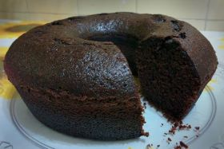
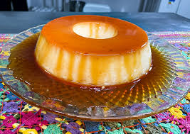

Bolo de Chocolate
2 xícaras de farinha de trigo
1 xícara de achocolatado em pó
3/4 de xícara de óleo
3 ovos
2 xícaras de açúcar
colher de sopa (rasa) de fermento em pó
xícara de leite fervendo
Modo de preparo: 40min
Primeiramente, misture os ingredientes secos. Após misturados, acrescente o óleo e o leite fervendo por cima. Misture até tornar a massa homogênea. Por último, coloque os ovos. Misture. Os ingredientes desta receita devem ser apenas misturados, não leve à batedeira. 7 Unte uma forma (30 cm diâmetro) com margarina e farinha de trigo. 8 Despeje a massa e leve ao forno pré-aquecido a 180º (forno baixo), por aproximadamente 40 minutos, ou até dourar.Omelete rápido
2 ovos
1 fatia de presunto
tempero verde a gosto
pitada de sal
2 fatias de queijo
caldo de galinha a gosto
Modo de preparo: 04min
Bata os 2 ovos, pode ser na batedeira ou não. Após ter batido bem, coloque-o na frigideira já untada com óleo, acrescente o sal, o presunto picado em quadradinhos e as duas fatias de queijo (não precisa picar o queijo). Coloque os temperos a gosto, espere ficar firme, e vire o omelete. Está pronto um omelete delicioso, bom apetite!Pudim de leite condensado simples
1 lata de leite condensado
4 ovos inteiros
1 xícara de leite de vaca
1 xícara (chá) de açúcar
1/3 de xícara (chá) de água